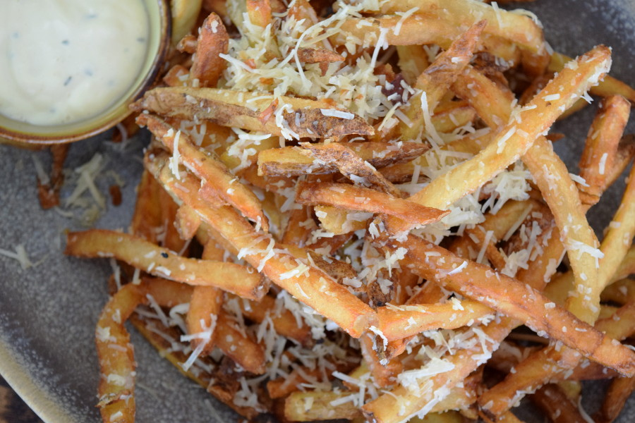

Truffle Fries

About the Fries
Green Valley Grills truffle fries are a Greensboro tradition and are one of the most popular features
on our menu (second only to GVGs parmesan crusted chicken). Below you’ll find the recipe to make
these delicious fries at home.
Ingredients
- 1 ½ cups Idaho Russet Potatoes
- 1 tsp Kosher Salt
- 1/4 cup (2 fl oz) Parmesan Lime Aioli (see recipe below)
- 2 Tbsps. (1 oz) Parmesan cheese, grated
- 1 Tbsps. (½ oz) Black Truffle Oil
- 1 tsp Truffled Sea Salt
- 2 cups Mayonnaise
- 1 fl oz Lime Juice
- ½ cup Parmesan cheese, grated
- ¼ tsp chopped fresh Thyme
- ½ tbsp chopped fresh Garlic
Steps
- Fill large bowl ½ way with cold water. Slice potatoes into 1/4 to 3/8 inch strips. Place cut potatoes directly into cold water.
Agitate potatoes to remove dirt and excess starch. Put aside. To make a salt water bath, fill a second large bowl 1/4 way with warm water,
add Kosher Salt, stir to dissolve. Add ¼ way with cold water. Transfer potatoes from first bowl to salted water bath. Potatoes can be
stored in the refrigerator until you are ready to blanch.
- Heat fry oil in fryer to 300 degrees. Shake excess water from potatoes and place in fry basket in batches. Drop into oil and allow to cook for
2 minutes and 15 seconds. Remove from oil and shake aggressively to separate fries. Place cooked fries on a sheet tray and keep cold until ready
for final cooking step. Wait for fry oil temperature to return to 300 degrees before continuing with next batch.
- Yields 7 pounds blanched potatoes
- Place 1 1/2 cups (12 oz) of blanched potatoes in hot fryer until crisp. Drain well. Place fries in a metal mixing bowl and toss with grated cheese,
truffle oil and salt. Enjoy and dip in Parmesan Lime Aioli.